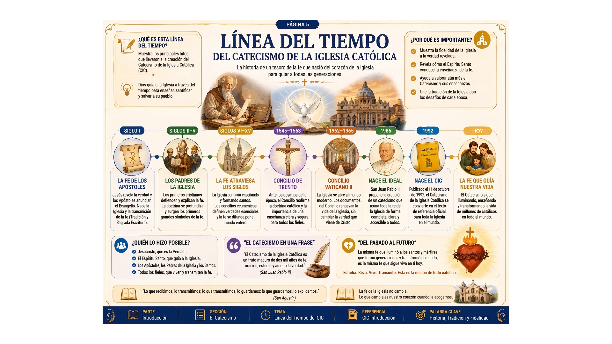
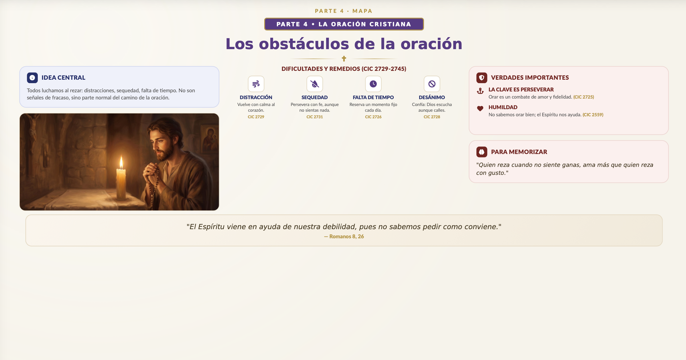
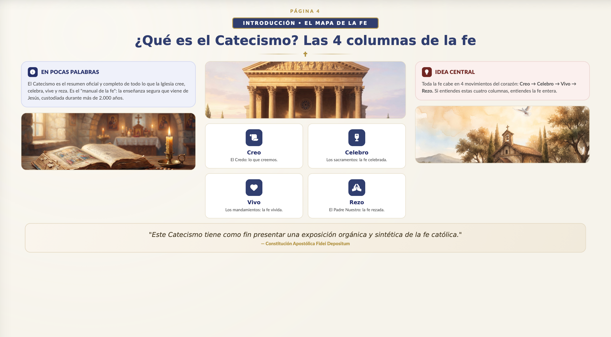
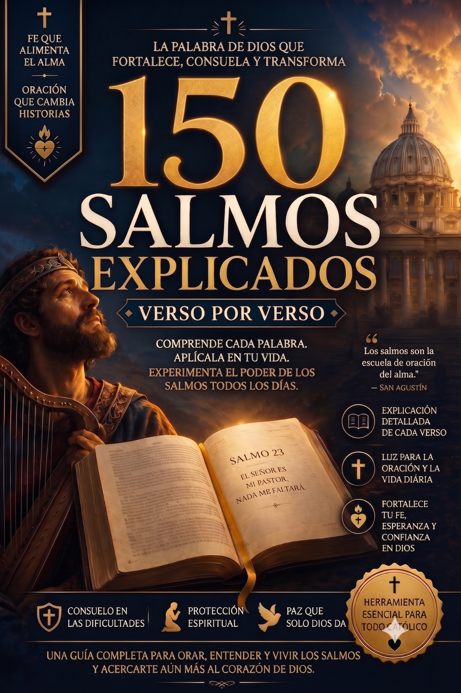

"Soy catequista desde hace 12 años y nunca había visto algo tan claro. ¡Los mapas mentales facilitan muchísimo explicar a los niños y adultos!"
María Fernanda
Guadalajara, MX
El Mapa del Catecismo transforma los más de 2.800 párrafos del Catecismo en mapas mentales ilustrados — para que conozcas, vivas y enseñes la fe con claridad.

Historias reales de quienes viven la fe con más claridad
"Soy catequista desde hace 12 años y nunca había visto algo tan claro. ¡Los mapas mentales facilitan muchísimo explicar a los niños y adultos!"
"Siempre quise leer el Catecismo, pero me parecía muy denso. Con este material, por fin entendí la profundidad de nuestra fe. ¡Lo recomiendo!"
"Lo compré para mí y terminé comprándolo también para mi esposo. Estudiamos juntos cada noche. Cambió nuestra vida espiritual."
"Material impecable. Lenguaje sencillo, fiel al Magisterio y visualmente hermoso. Vale cada centavo, compré la oferta completa."
"¡Los bonos son increíbles! El planner me ayudó mucho a crear una rutina de oración y estudio. Lo recomiendo de corazón."
"Como padre, quería enseñar la fe a mis hijos con más seguridad. Este mapa del catecismo se volvió nuestra guía familiar."
Un panorama del contenido que vas a recibir.
Siempre quise estudiar el Catecismo, pero no sabía por dónde empezar.
Quieres preparar encuentros didácticos y visualmente atractivos.
Deseas enseñar la fe católica a tus hijos con claridad.
Quieres profundizar en los más de 2.800 párrafos con mapas mentales.
Cada tema se presenta con mapas mentales, ilustraciones y lenguaje directo — sin perder la profundidad de la Tradición de la Iglesia.








Un material profundo, didáctico y visual — acompañado de bonos exclusivos para que conviertas el estudio del Catecismo en un hábito diario.

Contenido con más de 100 páginas que sintetiza visualmente los más de 2.800 párrafos del Catecismo de la Iglesia Católica.
Los recibes gratis al aprovechar nuestra oferta especial — 2 de ellos son bonos súper premium

Un material gigantesco con más de 700 páginas que explica, verso a verso, todos los 150 Salmos de la Biblia — en lenguaje simple, didáctico y profundo. Ideal para complementar tus estudios, profundizar tu oración y sumergirte en la Palabra de Dios todos los días.

Una selección cuidadosa de más de 100 canciones que tocan el alma — para rezar en los momentos difíciles, encontrar paz en medio del caos y sentir el abrazo de María en tu día a día. Ponte los audífonos, abre el corazón y deja que Dios te hable a través de la música.
+ 3 bonos más para tu camino

Para imprimir y acompañar tu camino — registra agradecimientos, oraciones, reflexiones y desahogos.

Acceso a un grupo exclusivo con devocional semanal, reflexión simplificada y oración guiada.

Pasos prácticos para crear el hábito del estudio y la oración diaria.
⚠️ ¡Aún estás a tiempo de llevar la mejor opción de abajo!
El 95% de las personas eligen la Súper Oferta — lleva más y paga muy poco más.

150 Salmos Explicados Verso a Verso
+700 páginas — verso por verso
+100 Canciones Marianas y Católicas
+15 horas para rezar y meditar
Si en los próximos 7 días sientes que el material no es para ti, solo escríbenos un correo y te devolveremos 100% de tu inversión — sin preguntas, sin trámites.
Acceso inmediato. Garantía de 7 días. Estudia la fe católica como nunca antes.
QUIERO MI ACCESO AHORA